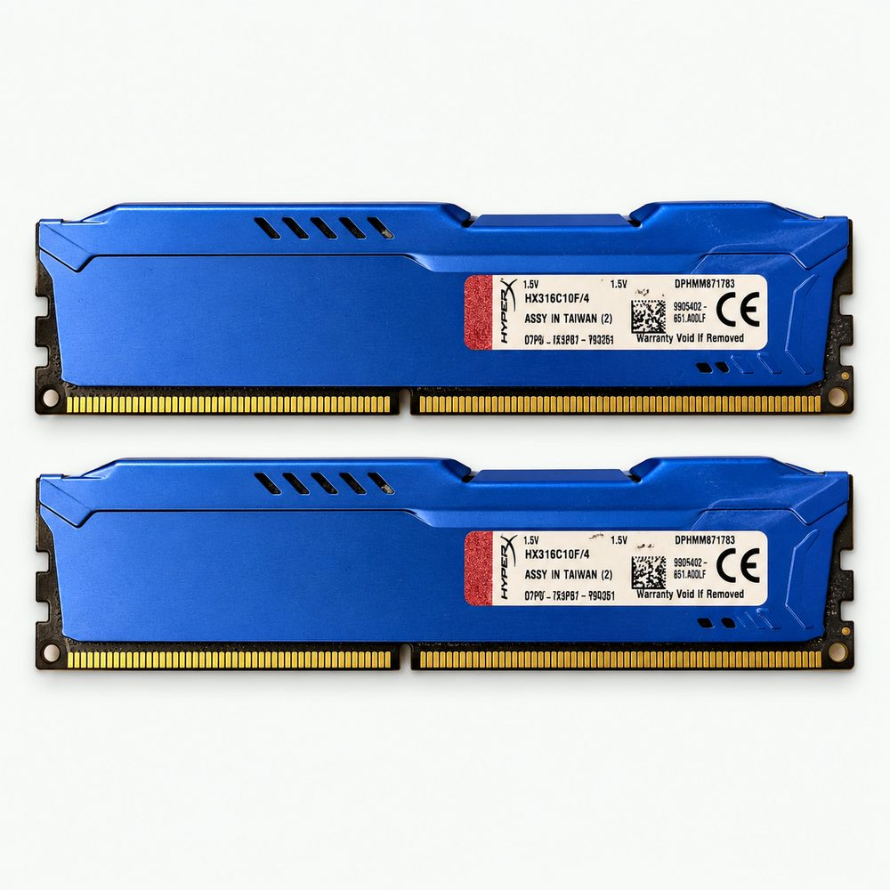

Memórias · Usado
Memória RAM 8GB DDR3 1600MHz Kingston HyperX Fury Blue 2x4GB Desktop
R$140A compra, o frete e o pagamento são feitos pela plataforma do anúncio. Somente envio. Confira lá a disponibilidade e o valor atual. Devolução em até 7 dias após o recebimento (direito de arrependimento), pela plataforma da compra.
- Marca
- Kingston
- Modelo
- HyperX Fury Blue HX316C10F/4
- Part number
- HX316C10F/4
- Estado
- Usado
- O que acompanha
- 2 pentes Kingston HyperX Fury Blue 4GB (HX316C10F/4)
Descrição
Memória RAM 8GB DDR3 1600MHz Kingston HyperX Fury Blue HX316C10F/4, kit com 2 pentes de 4GB para desktop.
Para que serve
Para montar ou ampliar para 8GB a memória de um PC desktop com placa-mãe DDR3. Com os dois pentes iguais, a placa trabalha em dual channel.
Especificações
- Capacidade total: 8GB, em 2 pentes de 4GB
- Tipo: DDR3, 1,5V
- Frequência: 1600MHz (PC3-12800)
- Latência: CL10
- Marca: Kingston, linha HyperX Fury
- Cor do dissipador: azul
- Formato: DIMM de 240 pinos, para desktop
- Modelo de cada pente: HX316C10F/4
- Código de produto Kingston: 9905402-651.A03LF
- Lote de fabricação: 1702
- Seriais: P002347 e P002371
Itens inclusos
- 2 pentes de memória Kingston HyperX Fury Blue de 4GB (HX316C10F/4)
Compatibilidade
Placas-mãe de desktop com memória DDR3 de 1,5V e slots DIMM de 240 pinos.
Estado
Usadas, testadas e funcionando. Contatos dourados limpos, sem oxidação. Dissipador com marcas leves de uso nas bordas e etiquetas íntegras.
Envio e pagamento
Envio para todo o Brasil pela OLX Entrega, com frete calculado pela OLX. Pagamento pela própria OLX.
Dúvidas
Me chame pelo chat da OLX com o modelo da sua placa-mãe que eu confiro a compatibilidade.